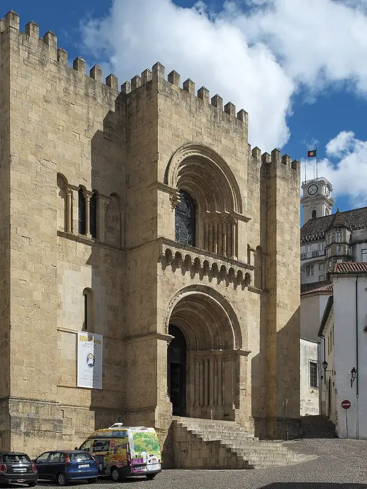

UC
University of Coimbra
Coming in the next update University of Coimbra isn't in the App Store version yet. Get the app now and it arrives with the update.
King Denis chartered the university in 1290, and it moved for good to Coimbra in 1537, into the old royal palace on top of the hill. The University of Coimbra – Alta and Sofia became a UNESCO World Heritage Site in 2013.
- 6Buildings
- 3Traditions
- 1162Oldest · Old Cathedral of Coimbra
- 1962Newest · University of Coimbra General Library
Campus map and Look Around
Tap a numbered pin to see that building from the street with Apple Look Around.
Planning the visit
- Fly intoPorto Airport (OPO)
Porto's Francisco Sá Carneiro Airport and Lisbon's Humberto Delgado Airport are the nearest major airports. From either city, trains on the Lisbon–Porto line stop at Coimbra-B station.
- Getting aroundWalking / City buses
The old university sits at the top of a steep hill above the Baixa (lower town), so expect stairs and narrow streets. City buses climb to the upper town, and everything in the Alta is within walking distance.
- Colors and teams
Portuguese is the language of classes and daily life. Latin was the official language of teaching until the university's reform in 1772, which is why the palace's long colonnaded balcony is called the Via Latina.
- Where to stayFind hotels near University of Coimbra on Expedia Compare on Booking.com Vacation rentals on Vrbo
Stamped! may earn a commission when you book through these links.
6 buildings to stamp
-
Photo: Alvesgaspar, CC BY-SA 3.0, via Wikimedia Commons Biblioteca Joanina
Paço das Escolas, Coimbra
Built between 1717 and 1728 and named after King John V, this library is a showpiece of Portuguese Baroque. Its gilded shelves are decorated with Chinese motifs, and a 1725 portrait of the king hangs in the last room.
- Built
- 1728
- Architect
- Gaspar Ferreira (master builder)
- Style
- Baroque
- Stories
- 3
- Today
- Historic library and museum
-
Photo: Alvesgaspar, CC BY-SA 3.0, via Wikimedia Commons Chapel of São Miguel
Paço das Escolas, Coimbra
This chapel of the old royal palace was planned by Marcos Pires from 1517 and finished by Diogo de Castilho after his death. Inside are tiled walls and a Baroque organ with nearly 2,000 pipes, a gift of King John V.
- Built
- 1522
- Architect
- Marcos Pires; Diogo de Castilho
- Style
- Manueline
- Today
- University chapel
-
Coimbra University Tower
Paço das Escolas, Coimbra
Italian architect António Canevari built the clock tower between 1728 and 1733, replacing an older tower. Its bells set the rhythm of university life, and visitors can now climb to the top.
- Built
- 1733
- Architect
- António Canevari
- Style
- Baroque
- Today
- Clock tower and viewpoint
-
Photo: Threeohsix, CC BY-SA 4.0, via Wikimedia Commons Porta Férrea
Largo da Porta Férrea, Coimbra
Built in 1634, the Iron Gate was the first major work after the university bought the royal palace. António Tavares designed it as a two-sided triumphal arch with statues of King Denis and King John III.
- Built
- 1634
- Architect
- António Tavares
- Style
- Mannerist
- Today
- Main entrance to the Paço das Escolas
-
University of Coimbra General Library
Largo da Porta Férrea, Coimbra
The university's main library opened its Edifício Novo in 1962, in buildings adapted from the old Faculty of Letters. It holds more than a million volumes and received the European Heritage Label in 2021.
- Built
- 1962
- Today
- General Library
-

Photo: GFreihalter, edited by MenkinAlRire, CC BY 3.0, via Wikimedia Commons Old Cathedral of Coimbra
Largo da Sé Velha, Coimbra
Work on this fortress-like Romanesque cathedral gained momentum in 1162, and Sancho I was crowned here in 1185. Its steps are where students sing the midnight serenade that opens the Queima das Fitas.
- Built
- 1162
- Architect
- Master Robert (attributed)
- Style
- Romanesque
- Today
- Church


3 traditions to check off
Stamped! keeps these as a checklist, so you can tick each one off on the visit.
A Cabra, the Tower Bell
The best-known of the University Tower's four bells is nicknamed "a Cabra" (the goat), and it once called students to class. You can climb the tower's narrow stairs for a view over Coimbra and the Mondego River.
The Library Bats
Two colonies of small bats have lived in the Joanina Library for about two and a half centuries and eat the insects that would damage the books. Staff cover the tables with leather each evening to protect them.
Serenade on the Old Cathedral Steps
At midnight at the start of the Queima das Fitas in May, students sing Coimbra fado on the steps of the Old Cathedral. Thousands gather in the square to listen in silence.
History
Founded 1290
From Wikipedia
It had an influential role in the development of higher education in the Portuguese-speaking countries, and in their history. Due to its historic influence, architecture, unique culture and traditions, it was declared in 2013 a World Heritage Site by UNESCO.
The app's quiz · 10 questions
How well do you know University of Coimbra?
The same quiz as in Stamped!: name the landmark, its architect, its style or the year it was finished. Every round is different.
Know University of Coimbra well?
Students and alumni know the traditions best. Suggest one we're missing, a building worth a stamp, a fix, or your own photo of a building. Every suggestion is checked before it goes into the app.
More schools around the world
- Aalto University
- Durham University
- King's College London
- KU Leuven
- McGill University
- National Autonomous University of Mexico
- Trinity College Dublin
- University College London
- University of British Columbia
- University of Cambridge
- University of Edinburgh
- University of Glasgow
- University of Melbourne
- University of Oxford
- University of Padua
- University of Paris (Sorbonne)
- University of Salamanca
- University of St Andrews
- University of Sydney
- University of Tokyo
- University of Toronto
- Uppsala University
Stamp all 6 on your visit.
Tour University of Coimbra in 3D before you go, add it to a college road trip and earn a passport stamp at every building. Free on iPhone, iPad and Mac.
Download on theApp StoreEnjoying the guides? Leave a tip to help keep new cities coming.